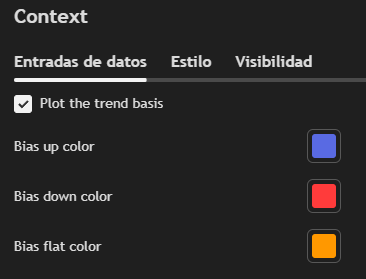
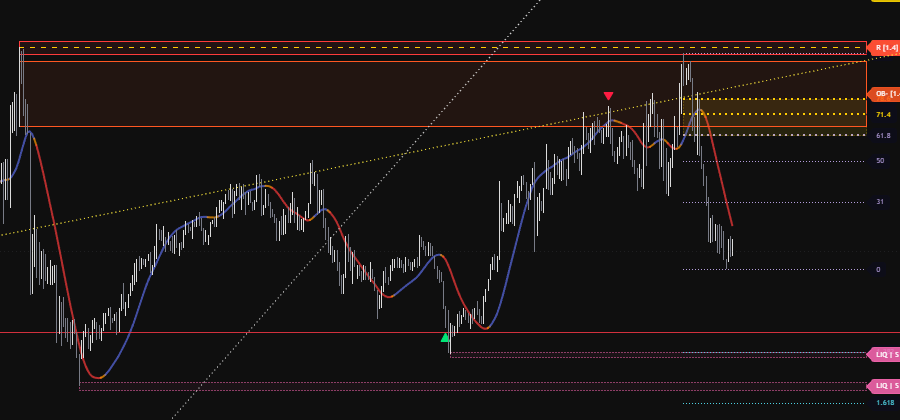

Para usar Context Confluence Zones necesitás dos cuentas: una en TradingView y una en BloFin. Creálas con estos enlaces; sin ellas no se puede habilitar el acceso.
Donde vas a ver y usar el indicador.
es.tradingview.com/pricing/?share_your_love=camilolwiEl exchange asociado a la comunidad Bull Army.
blofin.com/en/invite/BullArmyEs un mapa de zonas importantes. Busca niveles de precio con 5 métodos distintos, y cuando varios coinciden en el mismo lugar los junta en una sola zona de confluencia con un puntaje. Cuanto más alto el puntaje, más relevante es la zona.
Ilustración de ejemplo. Los colores y las etiquetas son los mismos que usa el indicador.
| 1Zona fuerte | Recuadro con borde grueso. Varias fuentes coinciden y el puntaje es alto (6 o más). Es la zona que más atención merece. |
| 2Zona a favor | Zona alineada con la tendencia: su puntaje sube. Acá, un soporte de 4H + un order block alcista + un soporte. |
| 3Zona débil o CT | Borde punteado y color tenue: zona en contra de la tendencia (CT) o con poco puntaje. Tomala con más cuidado. |
| 4Fibonacci | Líneas punteadas del tramo dominante. La banda dorada entre 61.8 y 78.6 es la zona profunda. |
| 5Barrida | Triángulo verde abajo (o rojo arriba): el precio barrió una liquidez y cerró de vuelta. Suele anticipar una reacción. |
Además, arriba a la derecha aparece la tabla resumen y abajo a la izquierda la leyenda con el significado de cada etiqueta. Las dos se explican más adelante.
El indicador busca niveles con 5 métodos. Cada uno tiene un peso: cuanto más importante es la fuente, más puntos aporta a la zona.
| Fuente | Qué es, simple | Etiqueta | Peso |
|---|---|---|---|
| Temporalidad mayor | Máximos y mínimos importantes de un gráfico más grande (por defecto 4H). Son los niveles que más respeta el mercado. | 4H R 4H S | 3 |
| Order block | La última vela contraria antes de un movimiento fuerte. Marca dónde entraron órdenes grandes. | OB+ OB- | 2 |
| Liquidez | Máximos y mínimos donde se acumulan stops. El precio suele ir a buscarlos. | LIQ SWP | 1.5 |
| Soporte y resistencia | Giros del precio en el gráfico actual. | S R | 1 |
| Fibonacci | Retrocesos del último tramo dominante. Por defecto solo suman los profundos: 61.8, 71.4 y 78.6. | Fib 61.8 | 1 |
SWP) y vale la mitad. Si cierra del otro lado, desaparece.Por defecto, solo entran al mapa los niveles que nacieron con el RSI en una zona extrema (por encima de 65 o por debajo de 35). Así quedan los niveles que se formaron con emoción en el mercado. Fibonacci nunca se filtra.
Off (ver Ajustes). Vas a ver todos los niveles.Cada zona tiene una etiqueta a la derecha que dice qué fuentes coinciden y cuánto vale. Ejemplo:
| 4H S | Soporte de la temporalidad mayor (4 horas). |
| OB+ | Order block alcista. OB- es bajista. |
| S x2 | Dos soportes del gráfico actual en la misma zona. xN = cuántos hay. |
| LIQ / SWP | Liquidez todavía intacta / liquidez ya barrida (vale la mitad). |
| [8.1] | Puntaje de la zona. Es lo más importante de la etiqueta. |
| CT | Zona en contra de la tendencia. Su puntaje se reduce. |
Se suman los pesos de todo lo que coincide en la zona y se ajusta según la tendencia:
4H S (3) + OB+ (2) + S (1) = 6
La tendencia es alcista y la zona también → × 1.35 = 8.1
Si la zona fuera en contra de la tendencia: × 0.65 = 3.9, y llevaría la marca CT.
| Resistencia temporalidad mayor |
| Soporte temporalidad mayor |
| Order block alcista |
| Order block bajista |
| Liquidez arriba (máximos) |
| Liquidez abajo (mínimos) |
| Resistencia |
| Soporte |
| Fibonacci |
| Zona profunda Fib (61.8–78.6) |
| Extensiones Fib (1.382 / 1.618) |
| Nivel invalidado (si elegís verlos) |
| CONTEXT | Temporalidad del gráfico. |
| Price | Precio actual. |
| Trend bias | Tendencia: Up, Down o Flat (lateral), con su inclinación. |
| RSI | RSI actual y modo del filtro. Verde = sobreventa, rojo = sobrecompra. |
| HTF | Temporalidad mayor en uso. «invalid» si no es mayor que tu gráfico. |
| Fib leg | Dirección del tramo de Fibonacci. |
| Score here | Puntaje donde está el precio ahora. En rojo cuando es zona caliente. |
| Shown / active | Niveles visibles / niveles activos. |
| Tolerance | Margen usado para agrupar niveles. |
Es un recordatorio rápido de las etiquetas (4H R / S, OB+ / OB-, LIQ, SWP, R / S, Fib, xN [N] CT). Si ya las conocés, podés ocultarla desde los ajustes para tener el gráfico más limpio.
El indicador trae una media móvil que cambia de color según la tendencia. Viene apagada de fábrica, así que tenés que activarla.

La opción dentro de los ajustes del indicador.
| Azul | Tendencia alcista. La media viene subiendo con fuerza: los compradores tienen el control. |
| Rojo | Tendencia bajista. La media viene bajando con fuerza: los vendedores tienen el control. |
| Naranja | Sin tendencia clara. La media está casi plana: el mercado está lateral o cambiando de dirección. |
| Trend basis length | Velas de la media. Más alto = más lenta y suave. | 55 |
| Slope window / threshold | Velas e inclinación mínima para dejar de ser naranja. | 5 / 0,15 |
| Read the bias from another timeframe | Toma la tendencia de una temporalidad mayor (Trend timeframe, 4H de fábrica). | No |
La media no es un adorno: es la misma línea que usa el indicador para decidir la tendencia. Verla en el gráfico te muestra en todo momento hacia dónde empuja el mercado.
CT.
Ejemplo real en BTCUSDT, 5 minutos: la media se pone roja en las caídas, azul en las subidas y naranja cuando el precio lateraliza.
| Color | Qué buscar |
|---|---|
| Azul | Compras en zonas de soporte por debajo del precio: S, OB+, 4H S, liquidez de abajo. |
| Rojo | Ventas en zonas de resistencia por encima del precio: R, OB-, 4H R, liquidez de arriba. |
| Naranja | Mercado sin dirección: más cuidado. Las zonas valen sin ajuste y conviene esperar confirmación. |
CT van en contra: exigen más confirmación.Para que TradingView te avise: tocá el ícono del reloj (Alertas) → Condición: elegí Context Confluence Zones → elegí la alerta → Crear.
| Alerta | Cuándo te avisa |
|---|---|
| Hot confluence zone | El precio entra en una zona con puntaje caliente (4 o más). |
| Buy-side liquidity swept | Se barrió liquidez de arriba y el precio cerró de vuelta abajo. |
| Sell-side liquidity swept | Se barrió liquidez de abajo y el precio cerró de vuelta arriba. |
| Order block entered | El precio toca un order block por primera vez. |
| Resistance broken | Una vela cierra por encima de una resistencia. |
| Support broken | Una vela cierra por debajo de un soporte. |
Abrí los ajustes con el engranaje al lado del nombre del indicador. Los valores de fábrica funcionan bien; estos son los que vale la pena conocer.
| Ajuste | Qué hace | De fábrica |
|---|---|---|
| Higher timeframe | Temporalidad mayor de donde salen los niveles más importantes. Tiene que ser mayor que la de tu gráfico. | 4H |
| Minimum score to display | Puntaje mínimo para que una zona aparezca. Subilo para ver menos zonas. | 1 |
| Score that marks a zone as hot / strong | Desde qué puntaje una zona es caliente o fuerte. | 4 / 6 |
| Counter-trend clusters | Qué hacer con las zonas en contra de la tendencia: Keep mostrarlas igual, Fade mostrarlas tenues, Hide ocultarlas. | Fade |
| Plot the trend basis | Muestra la media móvil de tendencia en el gráfico (ver sección 05). | No |
| Read the bias from another timeframe | Leer la tendencia de una temporalidad mayor (por ejemplo 4H) en vez de la del gráfico. | No |
| RSI filter · Filter mode | Off muestra todos los niveles. Outside bands solo los nacidos con RSI extremo. Directional exige sobreventa para niveles alcistas y sobrecompra para bajistas. | Outside bands |
| Invalidated levels | Qué pasa con los niveles rotos: Hide los borra, Fade los deja como línea punteada gris. | Hide |
| Max levels per type | Cuántos niveles guarda de cada tipo. Menos = gráfico más limpio. | 5 |
| Label content | Qué dice la etiqueta: solo texto, solo precio, ambos o nada. | Text only |
| Text size | Tamaño del texto de las etiquetas. | Tiny |
| Show the summary table / legend | Mostrar u ocultar la tabla y la leyenda. | Sí |
| Show … (cada fuente) | Prender o apagar cada fuente: S/R, order blocks, liquidez, Fibonacci y temporalidad mayor. | Todas |
Los niveles de la temporalidad mayor se leen solo de velas cerradas, así que no cambian después. Los soportes, resistencias y liquidez necesitan unas velas para confirmarse (10 y 8 por defecto): por eso aparecen un poco después del giro. Es normal y es lo que los hace confiables.
Pasa por el filtro RSI. Ponelo en Off o bajá el Minimum score to display.
Subí el Minimum score to display (por ejemplo a 3), bajá Max levels per type o poné Counter-trend clusters en Hide.
La temporalidad mayor elegida no es mayor que la de tu gráfico. Por ejemplo, si mirás un gráfico de 4H, poné la temporalidad mayor en 1D.
Funciona en todas. Una combinación simple: gráfico de 15m o 1H con temporalidad mayor de 4H; gráfico de 4H con temporalidad mayor de 1D.
No es lo recomendable. Usalo como mapa de contexto junto con tu lectura del precio, tu plan y tu gestión de riesgo.
Para mantener el acceso necesitás tus cuentas activas de TradingView y BloFin creadas con los enlaces de Bull Army.
Aviso: este material es educativo y no constituye recomendación de inversión. Operar en los mercados financieros implica riesgo de pérdida. Los resultados pasados no garantizan resultados futuros.